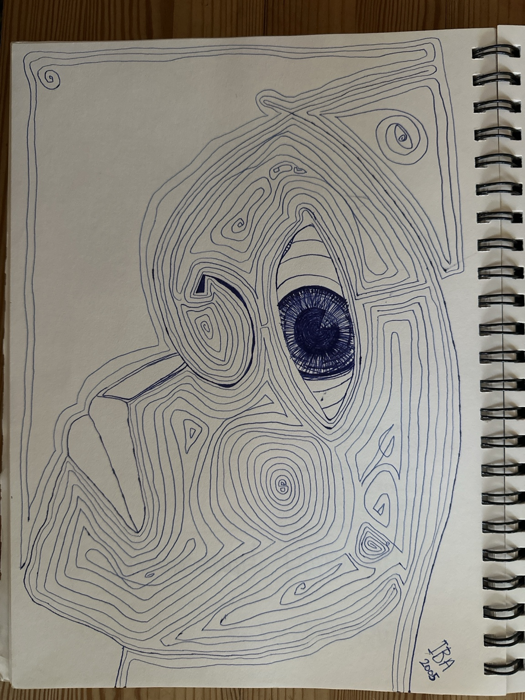
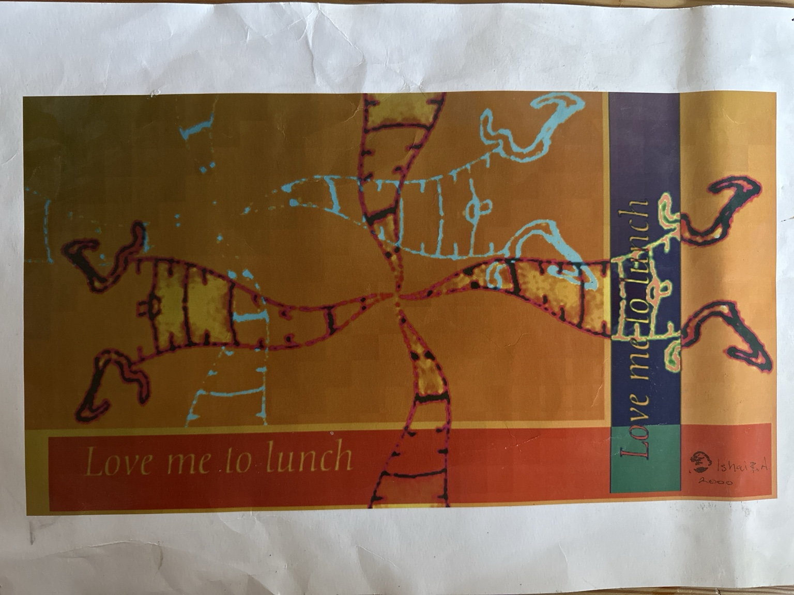

Analysis
A document is where the trail starts
We examine how decisions become services and results, keeping the evidence and the work still ahead visible.
Careful observation · evidence · constructive criticism
Front page
We follow public ideas into the places where they matter: a family finding care, a farmer working the land, a person using a service. Our stories ask what changes, who makes it happen and what others can learn.
Analysis
We examine how decisions become services and results, keeping the evidence and the work still ahead visible.
Constructive criticism
When an approach looks useful, we investigate how it works, who benefits and which costs or difficulties remain. Evidence can strengthen the story or change its direction.
Art offers ways of seeing that explanation alone may miss. Original work, photography and human–AI experiments help us explore those possibilities, with a clear distinction between artistic interpretation and documented events.

Bjørn Moe Aldema · Drawing from 2005 · Interactive
Turn a drawing into the light: explore the eye, spirals and lines in a digital relief.

Bjørn Moe Aldema · Print from 2000
Drawn by hand, transformed on screen, returned to paper in 2000.
Atriet
Atriet begins as an invitation: a path among trees, the warmth of a fire, a quiet opening on a screen.
We are imagining a physical place for art, learning, work and companionship, with room for people to meet in their own ways.
The first visual study explores that possibility. The place remains a concept under development.
An imagined place with room for whoever arrives.
Atriet begynner med en invitasjon: en sti mellom trærne, varmen fra en peis, en rolig åpning på en skjerm.
Vi utvikler en visjon om et fysisk sted for kunst, læring, arbeid og fellesskap, med plass til å møtes på forskjellige måter.
Den første visuelle studien utforsker muligheten. Stedet er fortsatt på konseptstadiet.
Et forestilt sted med rom for den som kommer.

About us
Experimental Newsroom is a developing collaboration between human judgement and AI assistance, working with journalism and art. We use identifiable sources and make uncertainty and editorial responsibility visible.
Writing, research, editing and technical work bring different forms of judgement to each publication.
We distinguish evidence, source claims and interpretation, then follow what people and institutions do.
Our aim is reporting that invites curiosity while remaining precise.